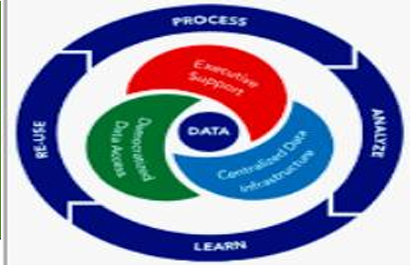

Role of Advanced Analytics in Organizations
📎Module 01 — Introduction to Advanced Data Analytics · Giralyn
R. Ongco, PhDTM
Advanced analytics in organizations refers to the systematic use
of statistical methods, predictive modeling, machine learning, and
data-driven strategies to improve operational, tactical, and
strategic decisions. It enables organizations to shift from
reactive, intuition-based decisions to proactive, evidence-based
strategies — making them faster, more efficient, and more
competitive.
Definition & Scope
Advanced analytics in organizations refers to
the systematic use of statistical methods, predictive
modeling, machine learning, and data-driven strategies to
improve operational, tactical, and strategic decisions. It
goes beyond simple reporting. It includes:
- Predictive analytics
- Prescriptive analytics
- Optimization models
- AI-driven systems
From Traditional to Data-Driven Organizations
🏛️ Traditional Organizations
- Rely on experience and intuition
- Decisions based on limited reports
- Reactive problem-solving
- Hierarchical command structure
- Centralized authority
- Limited cross-functional data integration
- Manual workflows
- Low automation
📊 Data-Driven Organizations
- Use analytics for evidence-based decisions
- Integrate data across departments
- Proactively identify risks and opportunities
- Faster decision cycles
- Reduced operational risk
- Improved resource optimization
- Increased transparency
- Better compliance and governance alignment
⚡ Advanced analytics enables organizations to shift from
reactive to proactive.

Comparative Result: Traditional vs Data-Driven
| Traditional Organization | Data-Driven Organization |
|---|---|
| Experience-based | Evidence-based |
| Static reports | Real-time dashboards |
| Reactive | Predictive & proactive |
| Siloed data | Integrated architecture |
| Manual analysis | Automated analytics |
Key Components of Advanced Analytics in Organizations
A. Data Infrastructure
- Centralized databases
- Data warehouses
- Cloud storage
- Integration systems
B. Analytical Tools
- Statistical software
- Programming platforms
- Machine learning tools
- Business intelligence dashboards
C. Skilled Workforce
- Data analysts
- Data scientists
- Engineers
- Decision-makers trained in analytics
D. Governance & Policies
- Data privacy standards
- Access controls
- Ethical guidelines
- Data quality management